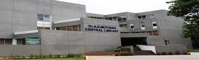
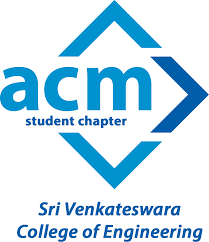

NEWS:-
A Three Day National Workshop on Industry 4.0 during 29-31 August 2019.
Internal Quality Assurance Cell (IQAC) and Dept.of Mechanical Engineering organizing Three Day National Workshop on Industry 4.0 on 29-31 August 2019. The participants are invited from faculty and student of all branches of SVCE and other colleges. - Dr.S.Gopinath, Prof./MEC, IQAC Coordinator Sri Venkateshwara College Of Engineering.
Transport arrangement for Employability Enhancement Program
Transport arrangement for Employability Enhancement Program Date Morning trip to college Return trip at 3.15 PM 23.08.19 & 24.08.19 14, 27, 36/30,44,56 14, 27, 36/30,44,56-TRANSPORT CONVENOR
April/May 2019 ANNA UNIV. Examinations - Procedure for applying Review:
A request letter addressed to the Controller of Examinations, Anna University along with the following are to be submitted to the Academic section. a) Justification and recommendation obtained from the respective faculty member who handled the subject. b) Review fee of Rs.3000/- per subject.
Time Table and Seating Arrangements for CAT - I ( SECOND YEAR STUDENTS)
Schedule of CAT-1 for Second Year Students (3rd Semester) Click here to view the Schedule Click here to view the Seating Arrangement
TRANSPORT ARRANGEMENT FOR CALIBRATIONS 2019
Date Morning trip to college Return trip at 3.30 19-08-19 1/14,4/2,3/11,7,16/10(ViaKorattur),9A,17/1215, 12/20,21/55,22/23,25/55,27/29/55A, 28,36 39/30,31/37,41/55,45/42,46/55,50/55, 56 58, 60 1/14,4/2,3/11,7,16/10(Via Korattur),9A, 17/12,15,12/20,21/55,22/23,25/55, 29/55A,27/28,3.
Revaluation review - [Revaluation result published on 09.08.2019.]
1. If a student not satisfied the result of revaluation, he/she can apply for review. The students should pay Rs. 3000/- (Rupees Three thousand only) per subject, only in the form of DD, in favor of “SVCE – CONTROLLER OF EXAMINATION”, payable at Chennai.
Workshop on " Implementation of 5S and TPM" on 14/08/19 between 9 AM - 12.30 PM.
IQAC is organizing a Workshop on "Implementation of 5S and TPM" for IQAC faculty coordinators, IQAC lab instructors and IQAC student coordinators on 14/08/19 between 9 AM - 12.30 PM. - Dr.S.Gopinath, IQAC Coordinator
A Two Days National Level Workshop on Cloud Based Real Time Applications of IoT using Raspberry Pi and Think Speak.
A Two Days National Level Workshop on Cloud Based Real Time Applications of IoT using Raspberry Pi and Think Speak on 9th & 10th Aug’ 2019 organized by the Department of Electronics and Communication Engineering. - Dr. S. Muthukumar, Professor & HOD.
Autonomous Revaluation Results
III & IV YEAR : https://cms.svce.ac.in II YEAR : https://svce.ac.in/result - COE SVCE.
Two Days NATIONAL WORKSHOP on “Artificial Intelligence Application to Renewable Energy Systems”
Department of Electrical and Electronics Engineering, SVCE Organizing a 2 Days National Workshop on “Artificial Intelligence application to Renewable Energy Systems” will be conducted during 29th and 30th August 2019. - CONVENOR Dr. K R. Santha, Vice Principal & HOD/EEE.
Enrolment of Volunteers to RRC-SVCE Unit for AY: 2019-2020. CIRCULAR
Enrolment of Volunteers to RRC-SVCE Unit for AY: 2019-2020. CIRCULAR Ref.No: RRC/02/2019-2020 &nb
Dress code for Students
Dress code: Students are expected to follow dress code conforming to the general serene atmosphere in the campus. Marine Engineering students have uniform and all other students are to follow the given instructions regarding the dress code: Body fit clothing, transparent or revealing outfits should be avoided.
Enrollment of volunteers to YRC-SVCE Unit for AY: 2019-20.
CIRCULAR Ref.No: YRC/02/2019-20
College Opening date for UG-First year Students - 31/07/2019
Commencement of classes for all Under-Graduate First year students is on 31st July 2019. - PRINCIPAL
AU Exam April/May 2019 - Photocopies of answer papers
AU Exam - April/May 2019 - Photocopies of answer scripts are received from the Anna University in respect of students those who applied for the same. Those students are requested to come and collect the same from respective department. The last date for applying revaluation is 27.07.2019. (before 12.30 pm) - PRINCIPAL
Achievements of Third year and Final year IT department students
1.Congratulations to Final year IT students and their team members for securing first prize in IEEE YESIST12 innovation challenge project contest prelims. Mr. Ajay Kaarthic J(IV yr IT), Mr. Kishore S(IV yr IT), Ms. Nerosha S(IV yr IT) along with Mr. Aravinth Raj(IV yr ECE) and Mr. Moham



